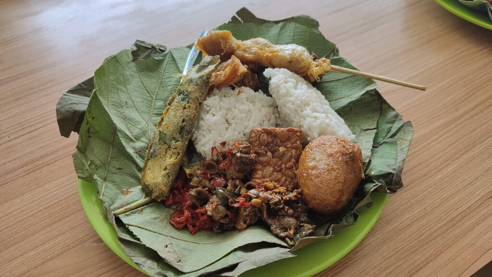
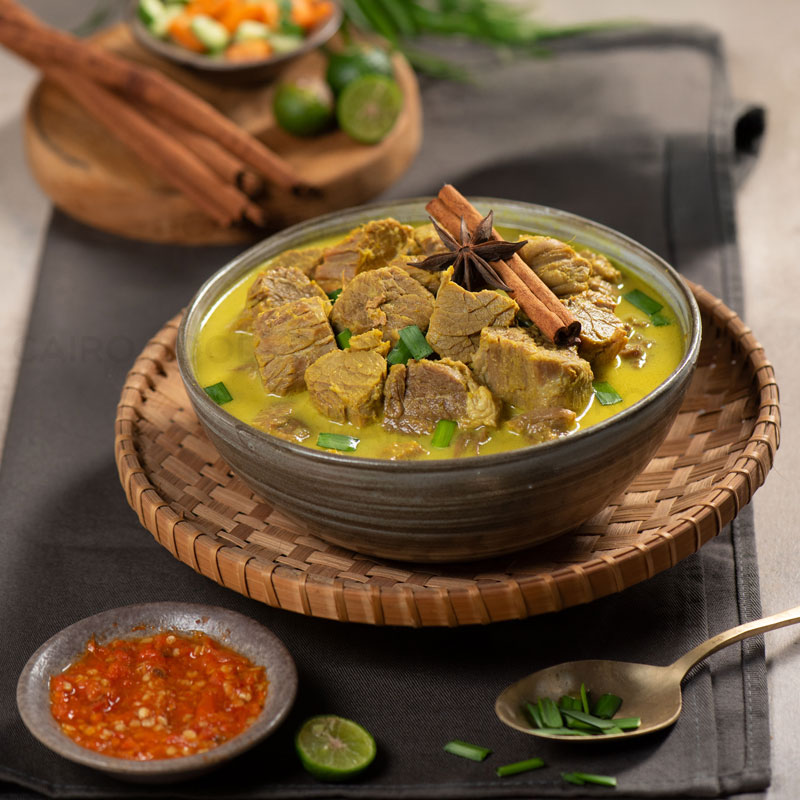
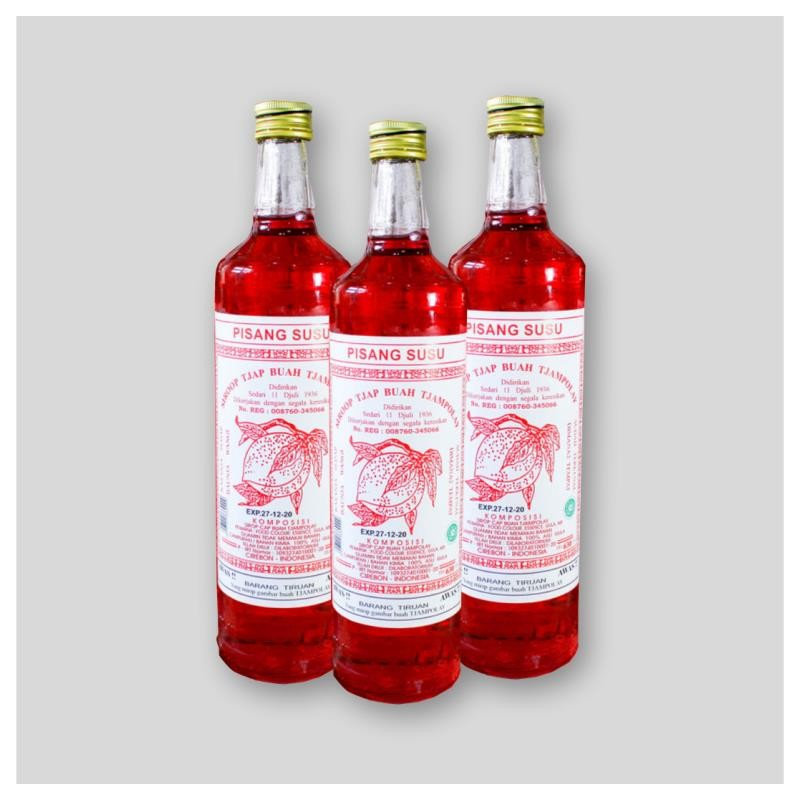
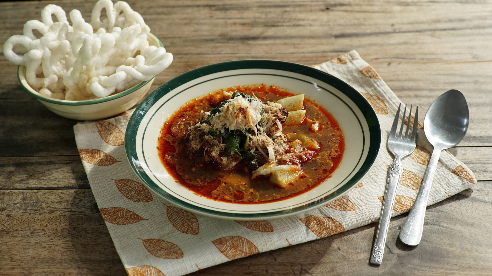
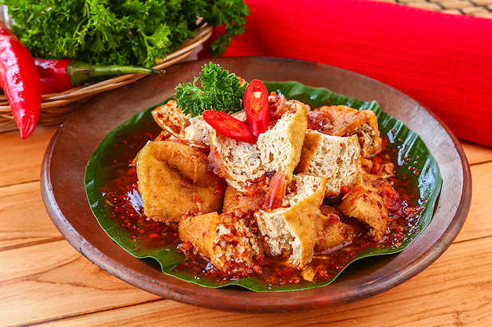

Sega Jamblang
Nasi Jamblang atau Sega Jamblang adalah ikon kuliner rakyat Cirebon yang disajikan di atas daun jati alami. Karakteristik pori-pori daun jati menjaga kehangatan nasi tanpa membuatnya lembek, serta memberikan aroma kayu hutan yang khas.
- ✦Pembungkus: Daun Jati Alami
- ✦Lauk Unggulan: Balakutak Sotong Hitam & Semur
- ✦Tekstur Rasa: Gurih Rempah Beraroma Khas

Empal Gentong
Sup daging sapi berkuah santan kuning kental dengan rempah melimpah. Dimasak secara perlahan menggunakan kuali tanah liat kuno dan dibakar dengan kayu pohon mangga yang menghasilkan aroma asap manis alami yang khas.
- ✦Alat Masak: Gentong Tanah Liat
- ✦Bahan Bakar: Kayu Bakar Pohon Mangga
- ✦Penyajian: Taburan Kucai & Bubuk Cabai

Tjampolay Syrup
Sirup legendaris warisan budaya kuliner Cirebon yang diproduksi sejak tahun 1936 oleh Tan Tjin Kiat. Dibuat menggunakan resep gula murni tradisional dengan varian rasa ikonik Pisang Susu yang harum dan manis khas.
- ✦Tahun Berdiri: Sejak 1936 Masehi
- ✦Pemanis: 100% Gula Tebu Murni
- ✦Rasa Terkenal: Pisang Susu (Rozen Rose)

Docang Cirebon
Kuliner sarapan legendaris berupa perpaduan lontong, tauge, daun singkong, dan parutan kelapa yang disiram kuah panas dari olahan tempe busuk (oncom merah). Hidangan unik ini memiliki rasa asam-gurih menyegarkan.
- ✦Bahan Kuah: Oncom Merah (Dage)
- ✦Pelengkap: Kerupuk Melarat & Daun Singkong
- ✦Cita Rasa: Gurih Unik Asam Menyegarkan

Tahu Gejrot
Kudapan sore berbahan dasar tahu pong kopong khas Cirebon. Dipotong kecil lalu disiram kuah asam manis gula merah yang diulek kasar langsung bersama bawang merah dan cabai rawit segar di atas layah tanah liat mini.
- ✦Tipe Tahu: Tahu Pong Goreng Kopong
- ✦Ulekan: Bawang Merah & Cabai Rawit Mentah
- ✦Rasa Kuah: Manis Pedas Asam Jawa Menyengat